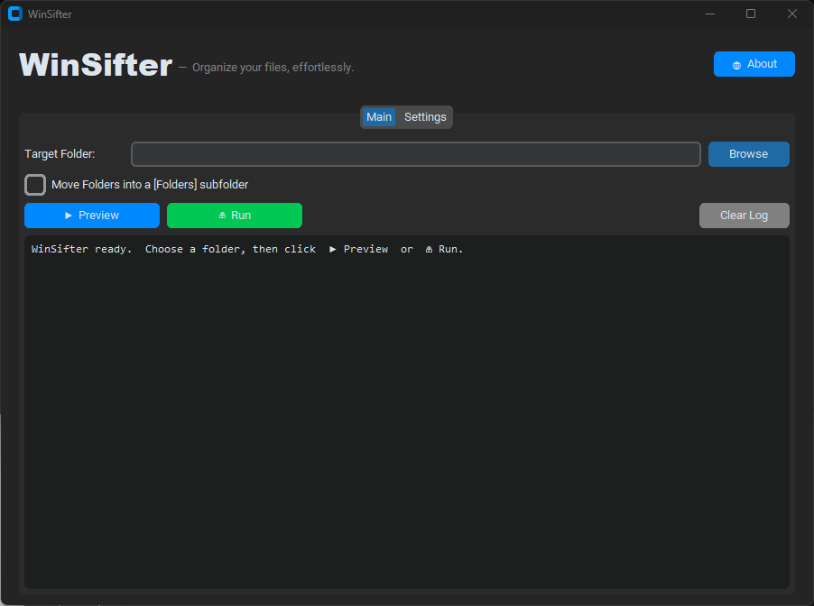
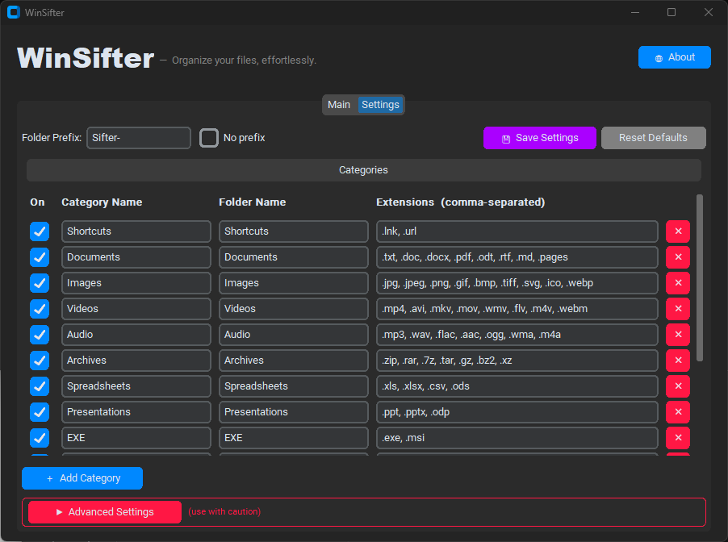

WinSifter automatically sorts any folder into clean, categorized subfolders — in one click, with a live preview before anything moves.

WinSifter handles the tedious work so you don't have to.
See a full list of every planned move before a single file is touched. No surprises.
Hit Run and WinSifter instantly moves every file into its correct subfolder.
Add, rename, reorder, or disable any category. Assign any file extensions you like.
Output folders are prefixed with Sifter- by default, keeping them visually grouped — or remove it entirely.
Duplicate filenames are never overwritten. Conflicts are renamed to file_1.ext, file_2.ext, and so on.
Your categories and preferences are saved automatically and restored on every launch.
No setup required. Open WinSifter, pick a folder, and you're done.
Click Browse and select any folder on your PC — your Desktop, Downloads, or anywhere else.
Click ▶ Preview to see a detailed log of exactly where every file will go — without moving anything yet.
Click ⚡ Run and WinSifter moves every file into its categorized subfolder in seconds.
Every category ships ready to use. Add new ones or tweak the extensions in the Settings tab.
The Settings tab puts you in full control — no config files to edit by hand.

Sifter-)Folders subfolderGrab the standalone executable — no Python required — or run directly from source.
Requires Windows 10 / 11 · Python 3.10+ (source only) · MIT License